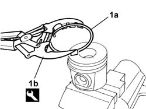
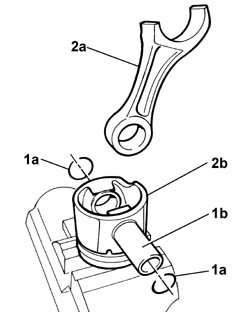
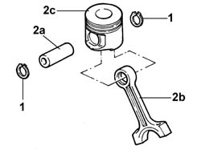
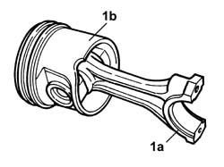

1028H54 PISTON/CYLINDER LINER - R R
- Path
- Procedures > 10 ENGINE UNIT > 1028 PISTONS AND CONNECTING RODS > 1028H PISTONS AND CONNECTING RODS > 1028H54 PISTON/CYLINDER LINER - R R
- Kind
- repair procedure (removal / refitting; the operation number is the code)
- Applies to
- engines: 2.3 JTD 16V, 2.8 JTD 8V; all production periods
- Interactive page
- https://sloeber94.github.io/elrnDB-fDct/en/#/244000688
Applies to: engines: 2.3 JTD 16V; all production periods
 Removing
Removing
 Refitting
Refitting- Remove the seals (1a) from the piston using the tool (1b).
 | Description | Code | Function |
|---|---|---|---|
1b | Extractor/Fitting tool | 1.860.183.000 | Extracting/fitting piston circlips |

Applies to: engines: 2.3 JTD 16V; all production periods
1. Using a suitable tool, remove the seals (1a) then extract the gudgeon pin (1b) from the piston.
2. Separate the connecting rod (2a) from the piston (2b).

Applies to: engines: 2.3 JTD 16V; all production periods
Refitting
Removing- Join the connecting rods to the pistons, fit the gudgeon pins and secure them using the circlips.
- Fit the piston rings on the piston using the special tool with the word TOP in the correct position.
| Description | Code | Function |
|---|---|---|---|
. | Extractor/Fitting tool | 1.860.183.000 | Extracting/fitting piston circlips |
Applies to: engines: 2.8 JTD 8V; all production periods
Removing
Refitting1. Remove the piston rings.
2. Release the pin (2a) and separate the connecting rods (2b) from the pistons (2c).

Applies to: engines: 2.8 JTD 8V; all production periods
Refitting
Removing1. Join the connecting rods with the pistons so that the number stamped on the big end (1a) is facing opposite the reference (1b) on the piston.
- Fit the pistons and fasten them using the piston rings.
